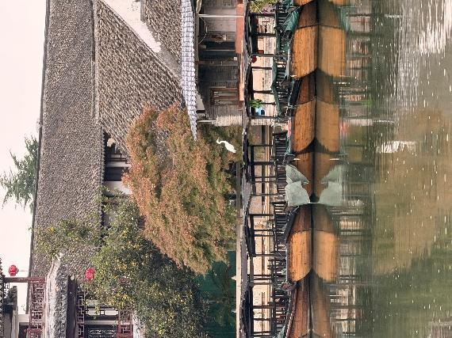
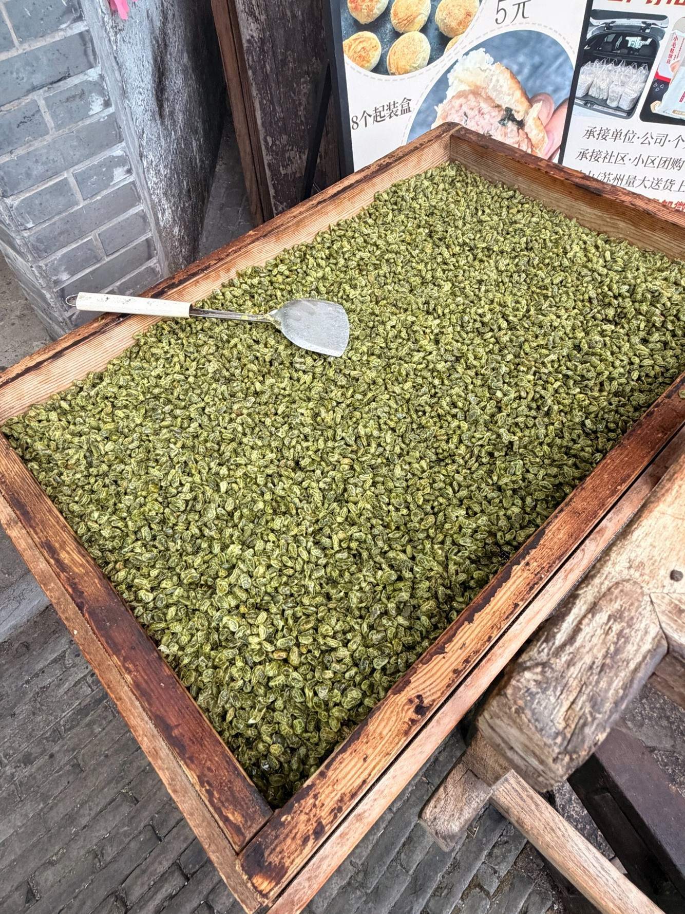
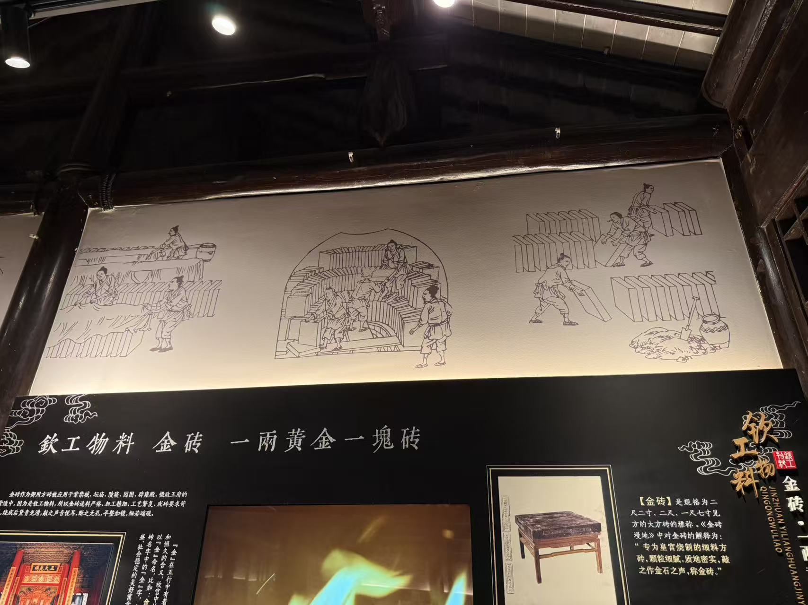
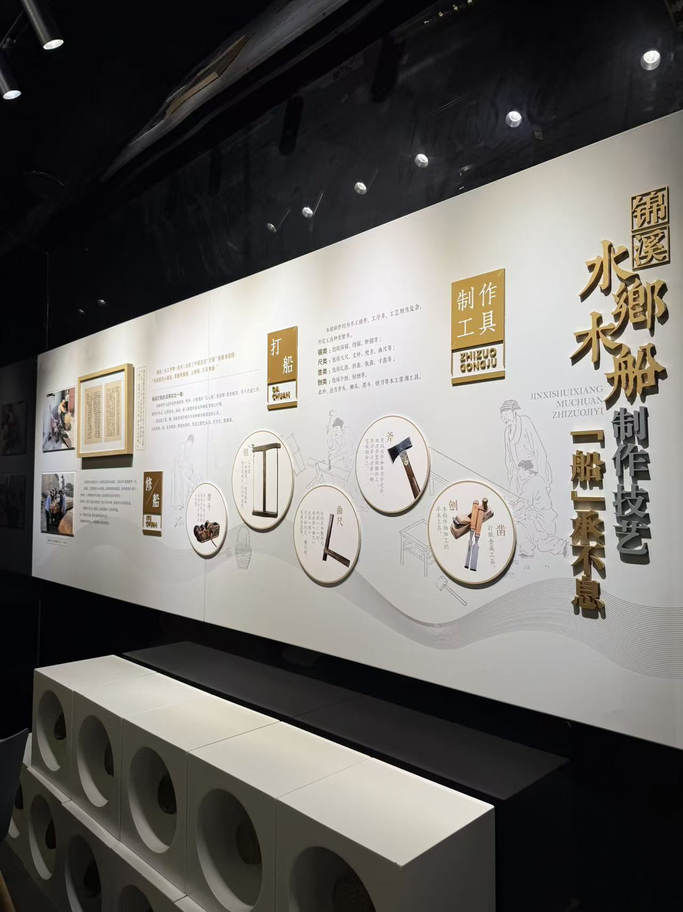
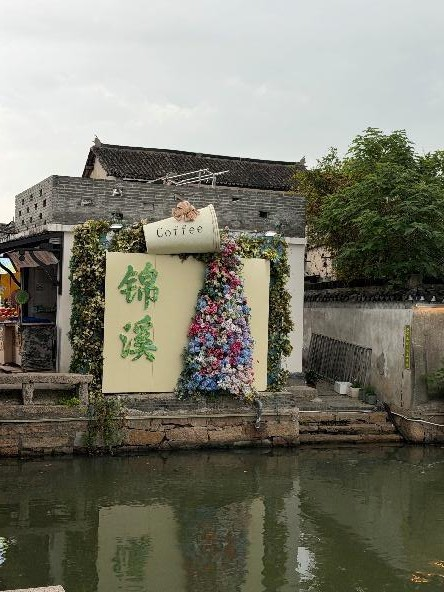

01 Project origin · Jinxi Ancient Town
Jinxi raised
the question.
In Jinxi, weather is not simply scenery. It can shape how people move, work, produce, welcome visitors, and make plans.
- 01 Where the question came from
- 02 How signals compare with outcomes
- 03 What signals could mean for a day
This page is an origin story, not a local needs assessment. The field visit generated questions that the later chapters investigate with data.
Field origin
One visit made weather uncertainty tangible.
Across the team’s field notes, Jinxi brought tourism services, food display and storage, waterside movement, heritage spaces, and material production into close view. These activities may respond to heat, rain, wind, humidity, water conditions, and seasonal change in different ways.
The team observed products, tourism settings, and museum displays during one visit. These records do not prove current financial losses, a weather-information gap, Polymarket use, a causal weather relationship, or community demand for a tool.



Select a context to see how weather can affect it


Design handoff
From one field visit to a broader public-information problem.
Jinxi did not give us a Polymarket dataset or demonstrate a local use of prediction markets. It prompted a broader question: how do different public systems represent weather uncertainty, and how can users compare their signals without treating any one of them as fact?
- What we saw
Place-based activity
Outdoor access, food display and storage, water-town movement, material processes
- What we asked
Weather uncertainty
How is it forecast, communicated, compared, and acted on in public information systems?
- What we study next
Public prediction signals
Official forecasts, Polymarket probabilities, observed outcomes, and AI-enabled forecasting
| Evidence cluster | Observed Direct observation | Inferred Question it raised | Unknown What it cannot establish |
|---|---|---|---|
| Service & tourism | Covered tour boats and a canal-side coffee shop connected to outdoor visitor spaces | How might weather uncertainty shape visitor movement, outdoor access, and service-related choices? | Passenger counts, revenue, operating schedules, workers’ information needs, or a weather effect on demand |
| Agriculture & fishery | Smoked beans and dried aquatic products displayed near storefronts | How can temperature, humidity, and rainfall become relevant to processing, drying, storage, transport, or sale? | Product origin, current methods, storage conditions, and measurable weather-related effects |
| Traditional production | Brick-and-tile and water-town boat-making displays, tools, materials, and production sequences | Why do material processes make environmental conditions and timing worth studying? | Whether industries are currently active, which stages are exposed, and how producers use weather information |
Project handoff
Jinxi gave us a question, not a dataset.
The next chapters investigate how weather uncertainty can be forecast, compared, priced, and acted upon — and what access, trust, and power shape those signals.
Jinxi field origin · September 2026 · The field visit motivates a broader public-information study; it does not demonstrate a Jinxi-specific need or Polymarket use. Field photographs are from a course visit; confirm reuse permission before publishing beyond the course.